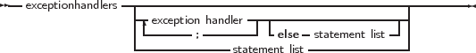

A try...except exception handling block is of the following form :
_________________________________________________________________________________________________________
Try..except statement

___________________________________________________________________
If no exception is raised during the execution of the statement list, then all statements in the list will be executed sequentially, and the except block will be skipped, transferring program flow to the statement after the final end.
If an exception occurs during the execution of the statement list, the program flow will be transferred to the except block. Statements in the statement list between the place where the exception was raised and the exception block are ignored.
In the exception handling block, the type of the exception is checked, and if there is an exception handler where the class type matches the exception object type, or is a parent type of the exception object type, then the statement following the corresponding Do will be executed. The first matching type is used. After the Do block was executed, the program continues after the End statement.
The identifier in an exception handling statement is optional, and declares an exception object. It can be used to manipulate the exception object in the exception handling code. The scope of this declaration is the statement block following the Do keyword.
If none of the On handlers matches the exception object type, then the statement list after else is executed. If no such list is found, then the exception is automatically re-raised. This process allows to nest try...except blocks.
If, on the other hand, the exception was caught, then the exception object is destroyed at the end of the exception handling block, before program flow continues. The exception is destroyed through a call to the object’s Destroy destructor.
As an example, given the previous declaration of the DoDiv function, consider the following
If Y happens to be zero, then the DoDiv function code will raise an exception. When this happens, program flow is transferred to the except statement, where the Exception handler will set the value of Z to zero. If no exception is raised, then program flow continues past the last end statement. To allow error recovery, the Try ... Finally block is supported. A Try...Finally block ensures that the statements following the Finally keyword are guaranteed to be executed, even if an exception occurs.